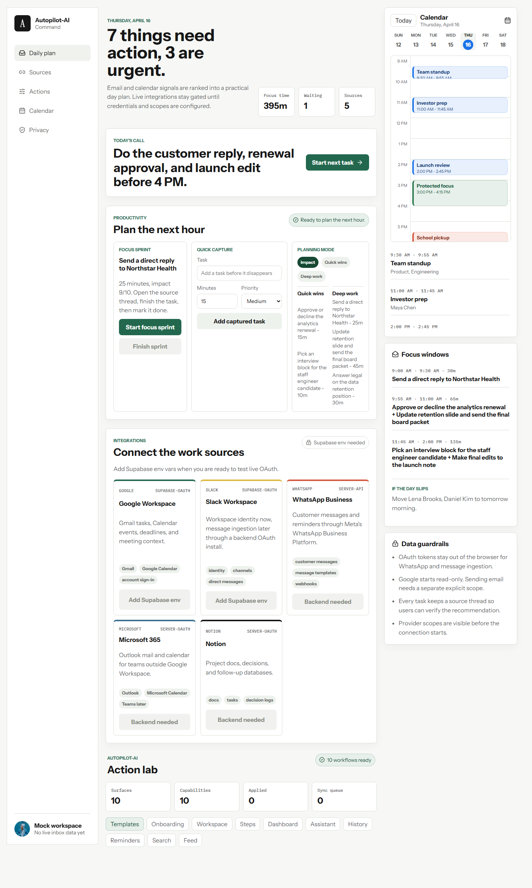
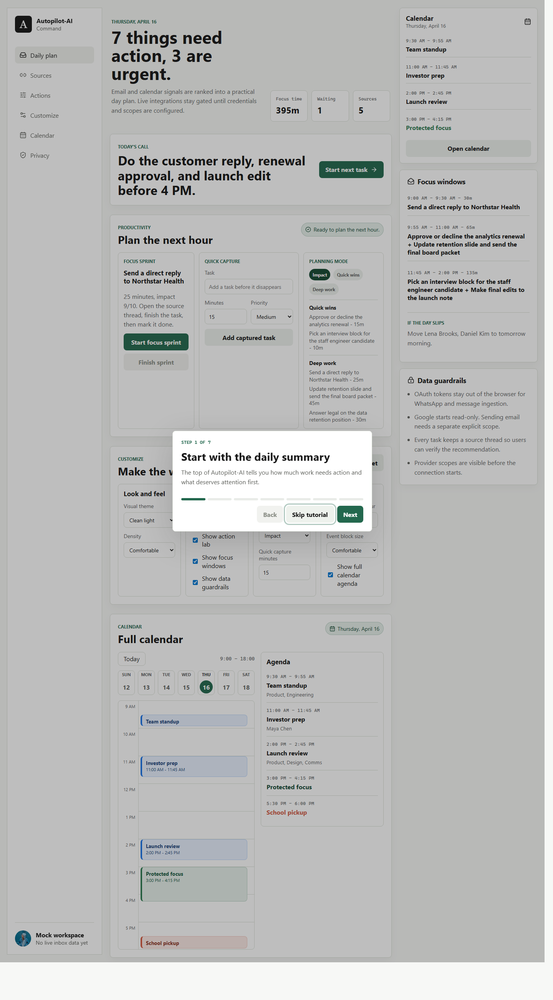

It turns scattered work into a visible ranked plan with real sources behind it.
Product tour
The command center built for work that refuses to stay in one place.
Inspired by the clarity of Shift's "everything in one place" story, Autopilot-AI does the same for action-heavy work, and Chrome's product pages pushed this version toward a cleaner, more direct read. It pulls email, calendar context, task extraction, approvals, handoffs, and customization into one place so a person can stop scanning six surfaces just to figure out what to do next.
clear
calm
yours
What Autopilot-AI already gives a user today
It keeps tasks, time, and handoffs connected instead of forcing users to glue them together mentally.
It can be rearranged and personalized so the product adapts to the operator instead of the reverse.
Reads connected work context
Users can sign in, connect Google in a second step, sync Gmail and Calendar context, and make the app plan from real source-backed activity instead of demo-only guesses.
Extracts action items from inbox activity
It filters for actionable messages, labels what is urgent or waiting, and keeps the source trail visible so the user understands why each task exists.
Turns work into a realistic daily schedule
The larger calendar page lets users add editable time blocks, adjust timing, and work from a day view instead of switching between planning and scheduling tools.
Provides focus and rescue workflows
Workflow templates, focus sprints, quick capture, and rescue playbooks help a user recover a messy day without starting from zero.
Handles delegation and follow-up handoffs
The action workspace can move work into waiting, create handoffs, and keep a shareable link so the next owner is clear.
Lets every user shape the workspace
Theme, density, page order, pinned pages, calendar hours, and section visibility can all be changed so the product fits how the user actually works.
Why someone would choose this over living in inbox, calendar, and memory
It cuts scanning time
People stop re-reading the same inbox and meetings just to rebuild the day's priorities.
It reduces dropped follow-ups
Action items get pulled into a visible queue instead of staying hidden inside threads.
It makes schedule tradeoffs visible
A user can see whether there is actually room for the work before promising it.
It keeps control with the user
The app helps think and organize first, while approvals and editable blocks keep the human in charge.
One product, multiple work modes
See what must happen first, what can wait, and what needs to be delegated.
Capture new work, start a sprint, and switch into a quick-wins or deep-work mode.
Connect providers carefully and verify that planning is using real synced data.
Apply recommendations, test action flows, and hand work off instead of hoarding it.
Treat the schedule like an operating surface, not just a passive reference.
Move pages around and shape the workspace until it feels personal, not imposed.

Calendar operations
Planning and scheduling sit together so the user can protect time and still adapt.

Shift-style personalization
Rearrange the workspace, pin the most useful pages, and change how dense or minimal it feels.
The flow is simple
1. Sign in
The user creates a session with Google or email.
2. Connect sources
Google Workspace is connected intentionally so inbox and calendar data can be read.
3. Sync and plan
The workspace syncs real inputs and builds a source-backed daily plan.
4. Work from one place
The user captures, schedules, delegates, edits, and customizes without bouncing across tabs.
Next
Try the workspace or use this page as the product story for a public site.
This page is ready to publish alongside the homepage, privacy policy, and terms.